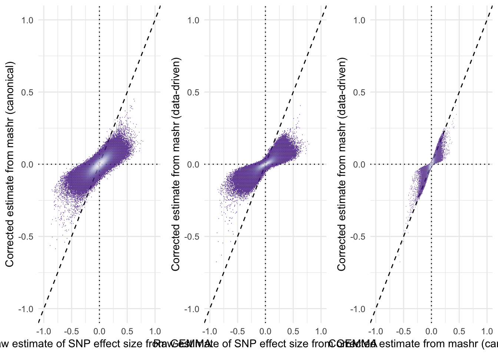

Last updated: 2021-10-01
Checks: 7 0
Knit directory: fitnessGWAS/
This reproducible R Markdown analysis was created with workflowr (version 1.6.2). The Checks tab describes the reproducibility checks that were applied when the results were created. The Past versions tab lists the development history.
Great! Since the R Markdown file has been committed to the Git repository, you know the exact version of the code that produced these results.
Great job! The global environment was empty. Objects defined in the global environment can affect the analysis in your R Markdown file in unknown ways. For reproduciblity it’s best to always run the code in an empty environment.
The command set.seed(20180914) was run prior to running the code in the R Markdown file. Setting a seed ensures that any results that rely on randomness, e.g. subsampling or permutations, are reproducible.
Great job! Recording the operating system, R version, and package versions is critical for reproducibility.
Nice! There were no cached chunks for this analysis, so you can be confident that you successfully produced the results during this run.
Great job! Using relative paths to the files within your workflowr project makes it easier to run your code on other machines.
Great! You are using Git for version control. Tracking code development and connecting the code version to the results is critical for reproducibility.
The results in this page were generated with repository version 01226ab. See the Past versions tab to see a history of the changes made to the R Markdown and HTML files.
Note that you need to be careful to ensure that all relevant files for the analysis have been committed to Git prior to generating the results (you can use wflow_publish or wflow_git_commit). workflowr only checks the R Markdown file, but you know if there are other scripts or data files that it depends on. Below is the status of the Git repository when the results were generated:
Ignored files:
Ignored: .DS_Store
Ignored: .Rapp.history
Ignored: .Rhistory
Ignored: .Rproj.user/
Ignored: .httr-oauth
Ignored: .pversion
Ignored: analysis/.DS_Store
Ignored: analysis/correlations_SNP_effects_cache/
Ignored: code/.DS_Store
Ignored: code/Drosophila_GWAS.Rmd
Ignored: data/.DS_Store
Ignored: data/derived/
Ignored: data/input/.DS_Store
Ignored: data/input/.pversion
Ignored: data/input/dgrp.fb557.annot.txt
Ignored: data/input/dgrp2.bed
Ignored: data/input/dgrp2.bim
Ignored: data/input/dgrp2.fam
Ignored: data/input/huang_transcriptome/
Ignored: figures/.DS_Store
Ignored: figures/fig1_inkscape.svg
Ignored: figures/figure1a.pdf
Ignored: figures/figure1b.pdf
Untracked files:
Untracked: big_model.rds
Untracked: code/quant_gen_1.R
Untracked: data/input/genomic_relatedness_matrix.rds
Untracked: old_analyses/
Unstaged changes:
Modified: .gitignore
Modified: figures/GWAS_stats_figure.pdf
Modified: figures/SNP_effect_ED.pdf
Modified: figures/TWAS_stats_figure.pdf
Modified: figures/antagonism_ratios.pdf
Modified: figures/boyle_plot.pdf
Modified: figures/composite_mixture_figure.pdf
Modified: figures/eff_size_histos.pdf
Note that any generated files, e.g. HTML, png, CSS, etc., are not included in this status report because it is ok for generated content to have uncommitted changes.
These are the previous versions of the repository in which changes were made to the R Markdown (analysis/checking_mashr_results.Rmd) and HTML (docs/checking_mashr_results.html) files. If you’ve configured a remote Git repository (see ?wflow_git_remote), click on the hyperlinks in the table below to view the files as they were in that past version.
| File | Version | Author | Date | Message |
|---|---|---|---|---|
| html | 8d14298 | lukeholman | 2021-09-26 | Build site. |
| Rmd | af15dd6 | lukeholman | 2021-09-26 | Commit Sept 2021 |
| html | 871ae81 | lukeholman | 2021-03-04 | Build site. |
| html | e112260 | lukeholman | 2021-03-04 | Build site. |
| html | 836a780 | lukeholman | 2021-03-04 | Build site. |
| Rmd | 0af3d41 | lukeholman | 2021-03-04 | big first commit 2021 |
| Rmd | 8d54ea5 | Luke Holman | 2018-12-23 | Initial commit |
| html | 8d54ea5 | Luke Holman | 2018-12-23 | Initial commit |
library(dplyr)
library(readr)
library(ggplot2)
library(gridExtra)
library(tidyr)
db <- DBI::dbConnect(RSQLite::SQLite(),
"data/derived/annotations.sqlite3")
# Results for all 1,613,615 SNPs, even those that are in 100% LD with others (these are grouped up by the SNP_clump column)
all_snps <- tbl(db, "univariate_lmm_results")
# All SNPs and SNP groups that are in <100% LD with one another (n = 1,207,357)
SNP_clumps <- all_snps %>% select(-SNP) %>% distinct() %>% collect(n=Inf)
# Subsetting variable to get the approx-LD subset of SNPs
LD_subset <- !is.na(SNP_clumps$LFSR_female_early_mashr_ED)The plots reveal that the R package mashr, which implements multivariate adaptive shrinkage, was effective at shrinking the effect size estimates towards zero. The amount of shrinkage applied was slightly stronger when applying mashr using data-driven covariance matrices, as opposed to ‘canonical’ covariance matrices that were selected a priori by us.
hex_plot <- function(x, y, xlab, ylab){
filter(SNP_clumps,LD_subset) %>%
ggplot(aes_string(x, y)) +
geom_abline(linetype = 2) +
geom_vline(xintercept = 0, linetype = 3) +
geom_hline(yintercept = 0, linetype = 3) +
stat_binhex(bins = 200, colour = "#FFFFFF00") +
scale_fill_distiller(palette = "Purples") +
coord_cartesian(xlim = c(-1,1), ylim = c(-0.55, 0.3)) +
theme_minimal() + xlab(xlab) + ylab(ylab) +
theme(legend.position = "none")
}
grid.arrange(
hex_plot("beta_female_early_raw",
"beta_female_early_mashr_canonical",
"Raw estimate of SNP\neffect size from LMM",
"Corrected estimate from\nmashr (canonical)"),
hex_plot("beta_female_early_raw",
"beta_female_early_mashr_ED",
"Raw estimate of SNP\neffect size from LMM",
"Corrected estimate from\nmashr (data-driven)"),
hex_plot("beta_female_early_mashr_canonical",
"beta_female_early_mashr_ED",
"Corrected estimate from\nmashr (canonical)",
"Corrected estimate from\nmashr (data-driven)"),
ncol = 3)
Figure SX: Plots comparing the raw effect sizes for each locus (calculated by linear mixed models implemented in GEMMA, LMM) with the effect sizes obtained using adaptive shrinkage implemented in mashr (either in ‘data-driven’ or ‘canonical’ methods). The dashed line shows \(y = x\), such that the first two plots illustrate that both forms of shrinkage moved both negative and positive effects towards zero. The third plot illustrates that very similar effect sizes were obtained whether we used the data-driven or canonical method.
sessionInfo()R version 4.0.3 (2020-10-10)
Platform: x86_64-apple-darwin17.0 (64-bit)
Running under: macOS Catalina 10.15.7
Matrix products: default
BLAS: /Library/Frameworks/R.framework/Versions/4.0/Resources/lib/libRblas.dylib
LAPACK: /Library/Frameworks/R.framework/Versions/4.0/Resources/lib/libRlapack.dylib
locale:
[1] en_GB.UTF-8/en_GB.UTF-8/en_GB.UTF-8/C/en_GB.UTF-8/en_GB.UTF-8
attached base packages:
[1] stats graphics grDevices utils datasets methods base
other attached packages:
[1] tidyr_1.1.0 gridExtra_2.3 ggplot2_3.3.2 readr_2.0.0
[5] dplyr_1.0.0 workflowr_1.6.2
loaded via a namespace (and not attached):
[1] Rcpp_1.0.4.6 highr_0.8 RColorBrewer_1.1-2 dbplyr_1.4.4
[5] compiler_4.0.3 pillar_1.4.4 later_1.0.0 git2r_0.27.1
[9] tools_4.0.3 bit_1.1-15.2 digest_0.6.25 lattice_0.20-41
[13] memoise_1.1.0 RSQLite_2.2.0 evaluate_0.14 lifecycle_0.2.0
[17] tibble_3.0.1 gtable_0.3.0 pkgconfig_2.0.3 rlang_0.4.6
[21] DBI_1.1.0 yaml_2.2.1 hexbin_1.28.1 xfun_0.22
[25] withr_2.2.0 stringr_1.4.0 knitr_1.32 generics_0.0.2
[29] fs_1.4.1 vctrs_0.3.0 hms_0.5.3 bit64_0.9-7
[33] rprojroot_1.3-2 grid_4.0.3 tidyselect_1.1.0 glue_1.4.2
[37] R6_2.4.1 rmarkdown_2.5 farver_2.0.3 blob_1.2.1
[41] purrr_0.3.4 tzdb_0.1.2 magrittr_2.0.1 whisker_0.4
[45] backports_1.1.7 scales_1.1.1 promises_1.1.0 htmltools_0.5.0
[49] ellipsis_0.3.1 assertthat_0.2.1 colorspace_1.4-1 httpuv_1.5.3.1
[53] labeling_0.3 stringi_1.5.3 munsell_0.5.0 crayon_1.3.4